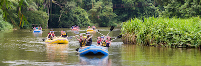
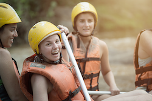

Over the years, we have grown into a premier rafting company, attracting adventurers from around the world.


White Water Rafting
History
At Rafting Adventures, our history is deeply rooted in the stunning landscapes of Tacna, Peru. Founded in [Year], we began as a small operation offering guided rafting trips on the Río Caplina. Our founders, inspired by the region's rich cultural heritage and breathtaking scenery, aimed to provide thrilling adventures while promoting environmental awareness.
Adventures Awaits You